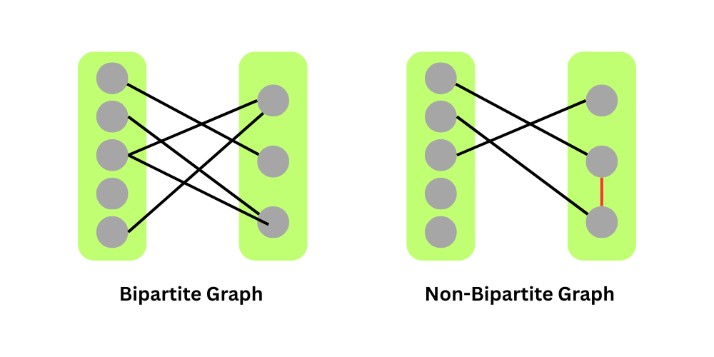

A bipartite graph is a graph whose vertices can be divided into two disjoint sets such that no two nodes within the same set are connected by an edge. Example:
;
There are two main ways to check for Bipartiteness:
Coloring: A graph is bipartite if its nodes can be colored using two colors so that there are
no adjacent nodes with the same color. The idea is to color the starting node blue, all its neighbors red, all their
neighbors blue, and so on. Refer this for more info.
Cycle length: if cycle length is odd then graph cannot be Bipartite. This is really hard to implement and generaly not used.
Assignment
Try this problem for standard bipartiteness check.